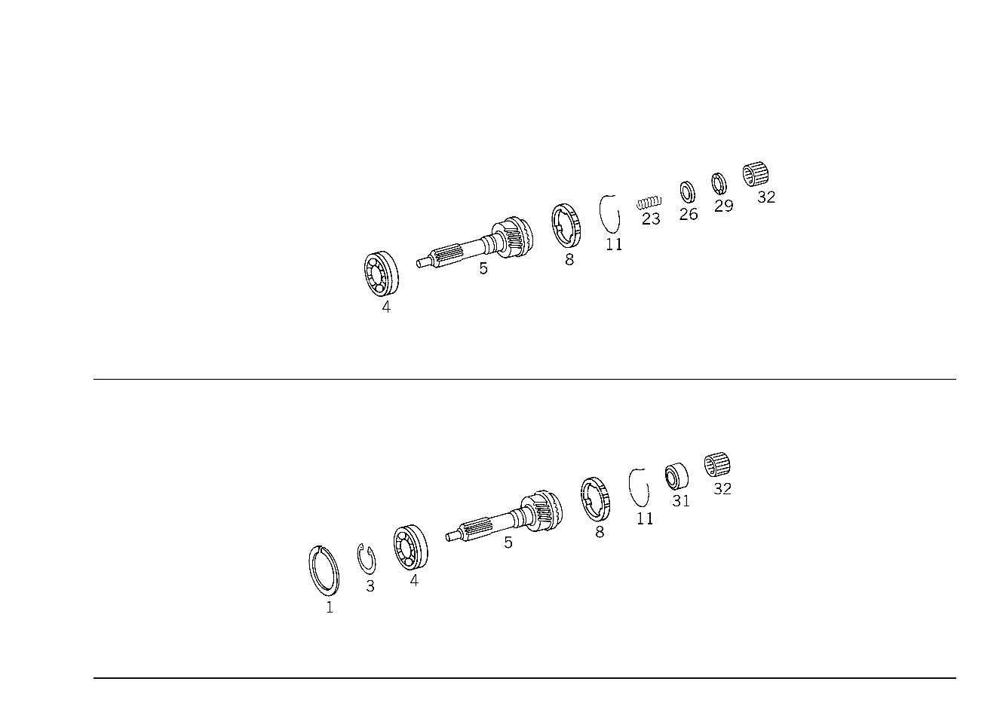

| № | Артикул | Название | Кол. | Примечание | Ограничение |
|---|---|---|---|---|---|
| 4 | A 008 981 05 05 | - Кон. роликоподшипник | 1 | ПРИВОДНОЙ ВАЛ | |
| 5 | A 126 260 26 20 | - ПРИВОДНОЙ ВАЛ | 1 | ||
| 8 | A 123 262 01 34 | - Кольцо синхронизатора | 1 | ЧЕТВЁРТАЯ ПЕРЕДАЧА | |
| 11 | A 123 262 01 93 | - пружина | 1 | КОЛЬЦО СИНХРОНИЗАТОРА | |
| 23 | A 126 993 15 06 | - ПРУЖИНА | - | [414] СТАРУЮ ДЕТАЛЬ УСТАНАВЛИВАТЬ БОЛЬШЕ НЕ РАЗРЕШАЕТСЯ | |
| 23 | A 126 993 49 06 | - Нажимная пружина | 1 | ПЕРВИЧНЫЙ ВАЛ И ВТОРИЧНЫЙ ВАЛ | |
| 26 | A 126 262 01 62 | - ШАЙБА УПОРНАЯ | 1 | ПЕРВИЧНЫЙ ВАЛ И ВТОРИЧНЫЙ ВАЛ [402] БОЛЬШЕ НЕ ПОСТАВЛЯЕТСЯ [032] ДЛЯ ЭТОГО ИСПОЛЬЗ.НАЖИМН.ШАЙБУ 126 262 03 62 - 12 62 | |
| 26 | A 126 262 22 52 | - РАСПОРНАЯ ШАЙБА | NB | ОСЕВОЙ ПОДШИПНИК ПРИВОДНОГО ВАЛА 0.1 MM [402] БОЛЬШЕ НЕ ПОСТАВЛЯЕТСЯ [032] ДЛЯ ЭТОГО ИСПОЛЬЗ.НАЖИМН.ШАЙБУ 126 262 03 62 - 12 62 | |
| 26 | A 126 262 23 52 | - РАСПОРНАЯ ШАЙБА | NB | ОСЕВОЙ ПОДШИПНИК ПРИВОДНОГО ВАЛА 0.3 MM [402] БОЛЬШЕ НЕ ПОСТАВЛЯЕТСЯ [032] ДЛЯ ЭТОГО ИСПОЛЬЗ.НАЖИМН.ШАЙБУ 126 262 03 62 - 12 62 | |
| 26 | A 126 262 24 52 | - РАСПОРНАЯ ШАЙБА | NB | ОСЕВОЙ ПОДШИПНИК ПРИВОДНОГО ВАЛА 0.5mm [402] БОЛЬШЕ НЕ ПОСТАВЛЯЕТСЯ [032] ДЛЯ ЭТОГО ИСПОЛЬЗ.НАЖИМН.ШАЙБУ 126 262 03 62 - 12 62 | |
| 26 | A 126 262 25 52 | - РАСПОРНАЯ ШАЙБА | NB | ОСЕВОЙ ПОДШИПНИК ПРИВОДНОГО ВАЛА 0.7 MM [402] БОЛЬШЕ НЕ ПОСТАВЛЯЕТСЯ [032] ДЛЯ ЭТОГО ИСПОЛЬЗ.НАЖИМН.ШАЙБУ 126 262 03 62 - 12 62 | |
| 26 | A 126 262 03 62 | - Упорная шайба | 1 | ПО НЕОБХОДИМОСТИ 4.3 MM | |
| 26 | A 126 262 04 62 | - Упорная шайба | 1 | ПО НЕОБХОДИМОСТИ 4.4 MM | |
| 26 | A 126 262 05 62 | - Упорная шайба | 1 | ПО НЕОБХОДИМОСТИ 4.5 MM | |
| 26 | A 126 262 06 62 | - Упорная шайба | 1 | ПО НЕОБХОДИМОСТИ 4.6 MM | |
| 26 | A 126 262 07 62 | - Упорная шайба | 1 | ПО НЕОБХОДИМОСТИ 4.7 MM | |
| 26 | A 126 262 08 62 | - Упорная шайба | 1 | ПО НЕОБХОДИМОСТИ 4.8 MM | |
| 26 | A 126 262 09 62 | - Упорная шайба | 1 | ПО НЕОБХОДИМОСТИ 4.9 MM | |
| 26 | A 126 262 10 62 | - Упорная шайба | 1 | ПО НЕОБХОДИМОСТИ 5.0 MM | |
| 26 | A 126 262 11 62 | - Упорная шайба | 1 | ПО НЕОБХОДИМОСТИ 5.1 MM | |
| 26 | A 126 262 12 62 | - Упорная шайба | 1 | ПО НЕОБХОДИМОСТИ 5.2 MM | |
| 29 | A 012 981 73 10 | - Игольчатый подшипник | 1 | ОСЕВОЙ | |
| 32 | A 010 981 82 10 | - Игольчатый подшипник | - | ||
| 32 | A 012 981 76 10 | - Игольчатый подшипник | 1 | ПЕРВИЧНЫЙ ВАЛ И ВТОРИЧНЫЙ ВАЛ | |
| 35 | A 201 262 03 62 | - Прижимная шайба | 1 | ПЕРВИЧНЫЙ ВАЛ И ВТОРИЧНЫЙ ВАЛ [100] ДЛЯ ЗАМЕН.АГРЕГАТА НАЧ. С АГРЕГАТА № 344725 | |
| 38 | A 201 262 05 62 | - Прижимная шайба | 1 | ПЕРВИЧНЫЙ ВАЛ И ВТОРИЧНЫЙ ВАЛ [100] ДЛЯ ЗАМЕН.АГРЕГАТА НАЧ. С АГРЕГАТА № 344725 | |
| 41 | A 017 981 24 10 | - Осевой подшипник | 1 | ОСЕВОЙ [100] ДЛЯ ЗАМЕН.АГРЕГАТА НАЧ. С АГРЕГАТА № 344725 | |
| 44 | A 201 262 10 62 | - Прижимная шайба | 1 | ПЕРВИЧНЫЙ ВАЛ И ВТОРИЧНЫЙ ВАЛ [100] ДЛЯ ЗАМЕН.АГРЕГАТА НАЧ. С АГРЕГАТА № 344725 | |
| 47 | A 201 993 08 26 | - Тарельчатая пружина | 1 | ПЕРВИЧНЫЙ ВАЛ И ВТОРИЧНЫЙ ВАЛ 0.3 MM [100] ДЛЯ ЗАМЕН.АГРЕГАТА НАЧ. С АГРЕГАТА № 344725 | |
| 50 | A 201 262 17 52 | - Дистанционная шайба | 2 | ОСЕВОЙ УПОРН.ПОДШИПН. И ГЛАВ.ВАЛ 1.0 MM [100] ДЛЯ ЗАМЕН.АГРЕГАТА НАЧ. С АГРЕГАТА № 344725 | |
| 50 | A 201 262 07 52 | - Дистанционная шайба | NB | ОСЕВОЙ УПОРН.ПОДШИПН. И ГЛАВ.ВАЛ 0.2 MM [100] ДЛЯ ЗАМЕН.АГРЕГАТА НАЧ. С АГРЕГАТА № 344725 | |
| 50 | A 201 262 08 52 | - Дистанционная шайба | NB | ОСЕВОЙ УПОРН.ПОДШИПН. И ГЛАВ.ВАЛ 0.3 MM [100] ДЛЯ ЗАМЕН.АГРЕГАТА НАЧ. С АГРЕГАТА № 344725 | |
| 56 | A 126 262 03 05 | - ВТОРИЧНЫЙ ВАЛ | - | ||
| 56 | A 126 262 04 05 | - ВТОРИЧНЫЙ ВАЛ | - | ||
| 56 | A 126 262 06 05 | - ВТОРИЧНЫЙ ВАЛ | - | [046] ИСПОЛЬЗОВАТЬ СТАРЫЙ НОМЕР ДЕТАЛИ ПО КП 6 137177 | |
| 56 | A 202 262 00 05 | - Вторичный вал | 1 | ||
| 59 | A 007 981 14 10 | - Игольчатый подшипник | 1 | ШЕСТЕРНЯ ТРЕТЬЕЙ ПЕРЕДАЧИ [402] БОЛЬШЕ НЕ ПОСТАВЛЯЕТСЯ | |
| 59 | A 014 981 79 10 | - ПОДШИПНИК ИГОЛЬЧАТЫЙ | 1 | ШЕСТЕРНЯ ТРЕТЬЕЙ ПЕРЕДАЧИ | |
| 62 | A 126 262 04 13 | - ШЕСТЕРНЯ | 1 | ТРЕТЬЯ ПЕРЕДАЧА | |
| 65 | A 123 262 01 93 | - пружина | 1 | ||
| 68 | A 123 262 01 34 | - Кольцо синхронизатора | 1 | ТРЕТЬЯ ПЕРЕДАЧА | |
| 71 | A 123 262 06 35 | - СИНХРОНИЗАТОР | - | ||
| 71 | A 202 262 01 35 | - СИНХРОНИЗАТОР | 1 | ТРЕТЬЯ И ЧЕТВЁРТАЯ ПЕРЕДАЧА | |
| 71 | A 123 262 03 35 | - Синхронизатор | 1 | ТРЕТЬЯ И ЧЕТВЁРТАЯ ПЕРЕДАЧА | |
| 71 | A 124 262 01 35 | - СИНХРОНИЗАТОР | 1 | ТРЕТЬЯ И ЧЕТВЁРТАЯ ПЕРЕДАЧА | |
| 74 | N 000471 026000 | - Стопорное кольцо | - | ||
| 74 | A 124 994 06 35 | - Стопорное кольцо | 1 | ПО НЕОБХОДИМОСТИ 1.2 MM | |
| 74 | A 123 994 17 35 | - СТОПОРН. КОЛЬЦО | - | ||
| 74 | A 124 994 07 35 | - Стопорное кольцо | 1 | ПО НЕОБХОДИМОСТИ 1.3 MM | |
| 74 | A 123 994 18 35 | - СТОПОРН. КОЛЬЦО | - | ||
| 74 | A 124 994 08 35 | - Стопорное кольцо | 1 | ПО НЕОБХОДИМОСТИ 1.4 MM | |
| 77 | A 126 262 04 23 | - Скользящая муфта | 1 | ТРЕТЬЯ И ЧЕТВЁРТАЯ ПЕРЕДАЧА | |
| 101 | A 007 981 15 10 | - Игольчатый подшипник | 1 | ШЕСТЕРНЯ ВТОРОЙ ПЕРЕДАЧИ | |
| 101 | A 007 981 16 10 | - ПОДШИПНИК ИГОЛЬЧАТЫЙ | 1 | ШЕСТЕРНЯ ВТОРОЙ ПЕРЕДАЧИ | |
| 103 | A 126 262 03 12 | - ШЕСТЕРНЯ | - | ||
| 103 | A 126 262 04 12 | - ШЕСТЕРНЯ | 1 | ВТОРАЯ ПЕРЕДАЧА | |
| 106 | A 123 262 00 34 | - КОЛЬЦО СИНХРОНИЗАТОРА | - | ||
| 106 | A 124 262 00 34 | - Кольцо синхронизатора | 1 | ВТОРАЯ ПЕРЕДАЧА | |
| 109 | A 123 262 02 93 | - пружина | 1 | ||
| 112 | A 123 262 04 35 | - СИНХРОНИЗАТОР | 1 | ПЕРВАЯ И ВТОРАЯ ПЕРЕДАЧА | |
| 112 | A 202 262 00 35 | - Синхронизатор | 1 | ПЕРВАЯ И ВТОРАЯ ПЕРЕДАЧА | |
| 115 | A 123 262 02 94 | - СТОПОРН. КОЛЬЦО | - | ||
| 115 | A 901 262 02 94 | - Пруж. стопорное кольцо | 1 | ||
| 118 | A 124 262 00 23 | - СКОЛЬЗ. МУФТА СИНХРОНИЗ. | - | ||
| 118 | A 123 262 03 23 | - СКОЛЬЗ. МУФТА СИНХРОНИЗ. | - | ||
| 118 | A 126 262 06 23 | - Скользящая муфта | 1 | ПЕРВАЯ И ВТОРАЯ ПЕРЕДАЧА | |
| 121 | A 007 981 90 10 | - Игольный венец | 1 | ШЕСТЕРНЯ ПЕРВОЙ ПЕРЕДАЧИ | |
| 121 | A 007 981 91 10 | - ПОДШИПНИК ИГОЛЬЧАТЫЙ | 1 | ШЕСТЕРНЯ ПЕРВОЙ ПЕРЕДАЧИ | |
| 121 | A 014 981 78 10 | - ПОДШИПНИК ИГОЛЬЧАТЫЙ | 1 | ШЕСТЕРНЯ ПЕРВОЙ ПЕРЕДАЧИ | |
| 124 | A 124 262 00 34 | - Кольцо синхронизатора | 1 | ПЕРВАЯ ПЕРЕДАЧА | |
| 127 | A 123 262 02 93 | - пружина | 1 | ||
| 128 | A 126 262 03 11 | - ШЕСТЕРНЯ | 1 | ПЕРВАЯ ПЕРЕДАЧА | |
| 129 | A 126 262 04 21 | - ШЕСТЕРНЯ | - | [014] ИСПОЛЬЗОВАТЬ СТАРЫЙ НОМЕР ДЕТАЛИ ПО КП 642342 | |
| 129 | A 126 262 05 21 | - ШЕСТЕРНЯ | 1 | [115] ТОЛЬКО ДЛЯ А/М БЕЗ 2-МАССОВОГО МАХОВИКА | |
| 129 | A 126 262 05 21 | - ШЕСТЕРНЯ | - | [039] ИСПОЛЬЗОВАТЬ СТАРЫЙ НОМЕР ДЕТАЛИ ПО КП 1 902740 | |
| 129 | A 126 262 08 21 | - ШЕСТЕРНЯ | - | ||
| 130 | A 210 260 00 25 | - ШЕСТЕРНЯ | - | ||
| 130 | A 126 262 05 21 | - ШЕСТЕРНЯ | 1 | ||
| 132 | A 202 993 28 01 | - ПРУЖИНА | 2 | ||
| 134 | A 202 262 05 52 | - РАСПОРНАЯ ШАЙБА | 1 | 3.50 MM | |
| 136 | A 008 981 05 05 | - Кон. роликоподшипник | 1 | ГЛАВ.ВАЛ И ПРОМЕЖУТ.ПЛАСТИНА | |
| 139 | A 124 262 13 52 | - Дистанционная шайба | NB | ГЛАВ.ВАЛ И ПРОМЕЖУТ.ПЛАСТИНА 0.05 MM | |
| 139 | A 124 262 14 52 | - Компенсационная шайба | NB | ГЛАВ.ВАЛ И ПРОМЕЖУТ.ПЛАСТИНА 0.07 MM | |
| 139 | A 123 262 05 52 | - Дистанционная шайба | NB | ГЛАВ.ВАЛ И ПРОМЕЖУТ.ПЛАСТИНА 0.1 MM | |
| 139 | A 123 262 07 52 | - Дистанционная шайба | NB | ГЛАВ.ВАЛ И ПРОМЕЖУТ.ПЛАСТИНА 0.3 MM | |
| 139 | A 126 262 20 52 | - РАСПОРНАЯ ШАЙБА | NB | ГЛАВ.ВАЛ И ПРОМЕЖУТ.ПЛАСТИНА 0.5mm | |
| 142 | A 126 262 03 15 | - ШЕСТЕРНЯ | 1 | ПЯТАЯ ПЕРЕДАЧА | |
| 145 | A 126 264 00 17 | - СТУПИЦА | 1 | ||
| 148 | A 123 264 01 76 | - Импульсный диск | 1 | (ДИСК ИМПУЛЬСНЫЙ) ЭЛЕКТРОННЫЙ СПИДОМЕТР | |
| 151 | A 126 260 07 24 | - ПРОМЕЖУТОЧНЫЙ ВАЛ | 1 | ||
| 154 | A 000 980 50 02 | - Кон. роликоподшипник | 1 | ВАЛ ПРОМЕЖУТ.ПЕРЕДАЧИ НА КРЫШКЕ КАРТЕРА | |
| 154 | A 007 981 87 05 | - КОНИЧ. РОЛИКОПОДШИПНИК | 1 | ВАЛ ПРОМЕЖУТ.ПЕРЕДАЧИ НА КРЫШКЕ КАРТЕРА | |
| 157 | A 126 263 01 52 | - РАСПОРНАЯ ШАЙБА | NB | ВАЛ ПРОМЕЖУТ.ПЕРЕДАЧИ НА КРЫШКЕ КАРТЕРА 0.05 MM | |
| 157 | A 124 263 00 52 | - РАСПОРНАЯ ШАЙБА | NB | ВАЛ ПРОМЕЖУТ.ПЕРЕДАЧИ НА КРЫШКЕ КАРТЕРА 0.07 MM | |
| 157 | A 126 263 02 52 | - Дистанционная шайба | NB | ВАЛ ПРОМЕЖУТ.ПЕРЕДАЧИ НА КРЫШКЕ КАРТЕРА 0.1 MM | |
| 157 | A 126 263 03 52 | - Дистанционная шайба | NB | ВАЛ ПРОМЕЖУТ.ПЕРЕДАЧИ НА КРЫШКЕ КАРТЕРА 0.2 MM | |
| 160 | A 008 981 06 05 | - Кон. роликоподшипник | 1 | ВАЛ ПРОМЕЖУТ.ПЕРЕДАЧИ НА ПРОМЕЖУТ.ПЛАСТИНЕ | |
| 166 | A 126 260 03 25 | - ШЕСТЕРНЯ | - | [014] ИСПОЛЬЗОВАТЬ СТАРЫЙ НОМЕР ДЕТАЛИ ПО КП 642342 | |
| 166 | A 126 260 04 25 | - ШЕСТЕРНЯ | - | [039] ИСПОЛЬЗОВАТЬ СТАРЫЙ НОМЕР ДЕТАЛИ ПО КП 1 902740 | |
| 166 | A 126 260 08 25 | - ШЕСТЕРНЯ | - | ||
| 166 | A 126 260 04 25 | - ШЕСТЕРНЯ | - | ||
| 166 | A 126 260 09 25 | - ШЕСТЕРНЯ | 1 | ОБРАТН. ПОТОК \- СДВИЖ. КОЛЕСО | |
| 169 | A 124 263 01 30 | - Ось шестерни заднего хода | 1 | ||
| 172 | N 000125 008418 | - Шайба | - | ||
| 172 | N 000125 008443 | - Шайба | 1 | ОСЬ ШЕСТЕРНИ ЗАДНЕГО ХОДА НА КОРПУСЕ КП; 8 MM | |
| 175 | N 000912 008072 | - Винт | - | ||
| 175 | N 000000 001448 | - Винт с 6-гр. глвк | 1 | ОСЬ ШЕСТЕРНИ ЗАДНЕГО ХОДА НА КОРПУСЕ КП; M8X45 | |
| 178 | A 126 263 00 62 | - ШАЙБА УПОРНАЯ | 1 | ||
| 181 | A 007 981 14 10 | - Игольчатый подшипник | 1 | ШЕСТЕРНЯ ПЯТОЙ ПЕРЕДАЧИ [402] БОЛЬШЕ НЕ ПОСТАВЛЯЕТСЯ | |
| 181 | A 013 981 42 10 | - Игольчатый подшипник | 1 | ШЕСТЕРНЯ ПЯТОЙ ПЕРЕДАЧИ | |
| 184 | A 126 263 04 15 | - ШЕСТЕРНЯ | - | ||
| 184 | A 126 263 05 15 | - ШЕСТЕРНЯ | 1 | ПЯТАЯ ПЕРЕДАЧА | |
| 187 | A 126 262 03 34 | - Кольцо синхронизатора | 1 | ПЯТАЯ ПЕРЕДАЧА | |
| 190 | A 123 262 01 93 | - пружина | 1 | ||
| 193 | A 126 262 04 35 | - Синхронизатор | 1 | ПЯТАЯ ПЕРЕДАЧА | |
| 193 | A 202 262 02 35 | - СИНХРОНИЗАТОР | 1 | ПЯТАЯ ПЕРЕДАЧА | |
| 196 | N 000471 026000 | - Стопорное кольцо | - | ||
| 196 | A 124 994 06 35 | - Стопорное кольцо | 1 | ПО НЕОБХОДИМОСТИ 1.2 MM | |
| 196 | A 123 994 17 35 | - СТОПОРН. КОЛЬЦО | - | ||
| 196 | A 124 994 07 35 | - Стопорное кольцо | 1 | ПО НЕОБХОДИМОСТИ 1.3 MM | |
| 196 | A 123 994 18 35 | - СТОПОРН. КОЛЬЦО | - | ||
| 196 | A 124 994 08 35 | - Стопорное кольцо | 1 | ПО НЕОБХОДИМОСТИ 1.4 MM | |
| 199 | A 126 262 05 23 | - Скользящая муфта | 1 | ПЯТАЯ ПЕРЕДАЧА | |
| 202 | A 011 981 45 10 | - Игольчатый подшипник | 1 | ПРОМЕЖУТОЧНЫЙ ВАЛ, СЗАДИ |
Позиций: 124 · подписано на схемах: 124 · колесо — плавный зум в курсор, перетаскивание — пан, двойной клик — зум, клик по артикулу — скопировать · наведите на строку или цифру на схеме — подсветка связки, клик — закрепить.